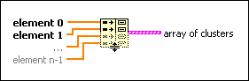

Build Cluster Array Function
Owning Palette: Cluster, Class, & Variant VIs and Functions
Requires: Base Development System
Bundles each element input into a cluster and assembles all element clusters into an array of clusters.
The connector pane displays the default data types for this polymorphic function.

 Add to the block diagram Add to the block diagram |
 Find on the palette Find on the palette |